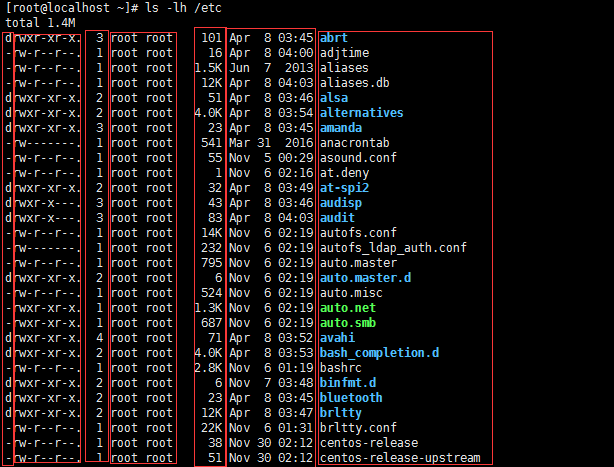

其它工具¶
命令汇总
0x00 echo¶
echo命令类似于c中printf，用于I/O标准输出
$echo "hello world" # 打印字符串
# -e选项支持字符串内转义字符的显示输出
$echo -e "hello\bworld" # 删除前面的字符，输出hellworld
$echo -e "hello\tworld" # 制表符，输出hello world
$echo -e "hello\vworld" # 垂直制表符
$echo -e "hello\nworld" # 换行符
# 着色显示，字符串格式为："\033[#;#mSTRING\033[0m"
# 控制符开始\033[
# 第一个#表示字背景颜色，;前面的标识为背景颜色，颜色范围40—–47
# ;用来分隔字背景颜色和文字颜色，如果没有表示默认背景颜色
# 第二个#表示文字颜色，m前面的颜色标识为文字颜色，颜色范围30—–37
# 控制符结束\033[0m
$echo -e "\033[32mhello\033[0m" # 着色显示，默认背景颜色，字颜色为32绿色
$echo -e "\033[34m 蓝色字 \033[0m"
$echo -e "\033[35m 紫色字 \033[0m"
$echo -e "\033[36m 天蓝字 \033[0m"
$echo -e "\033[37m 白色字 \033[0m"
$echo -e "\033[40;37m 黑底白字 \033[0m"
$echo -e "\033[41;37m 红底白字 \033[0m"
$echo -e "\033[42;37m 绿底白字 \033[0m"
$echo -e "\033[43;37m 黄底白字 \033[0m"
$echo -e "\033[44;37m 蓝底白字 \033[0m"
$echo -e "\033[45;37m 紫底白字 \033[0m"
$echo -e "\033[46;37m 天蓝底白字 \033[0m"
$echo -e "\033[47;30m 白底黑字 \033[0m"
$echo -e "\033[41;37;0m 关闭所有属性 \033[0m"
$echo -e "\033[41;37;1m 设置高亮度 \033[0m"
$echo -e "\033[41;37;4m 下划线 \033[0m"
$echo -e "\033[41;37;5m 闪烁 \033[0m"
$echo -e "\033[41;37;7m 反显 \033[0m"
$echo -e "\033[41;37;8m 消隐 \033[0m"


0x01 环境变量¶
$export # 显示当前shell环境变量